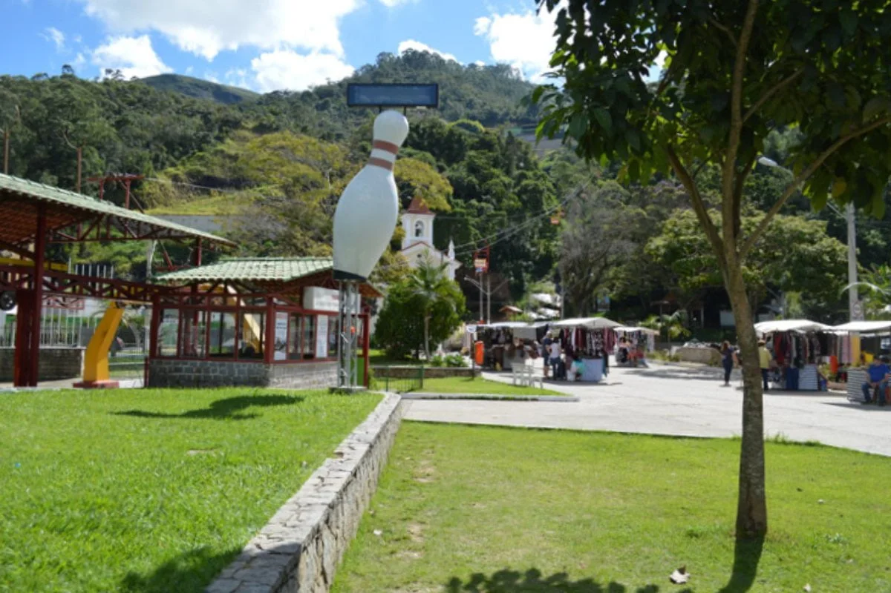
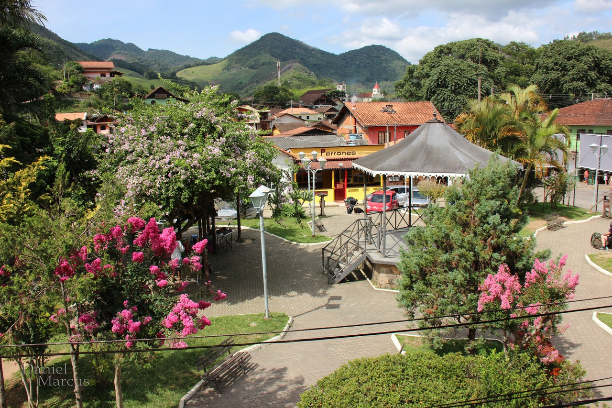
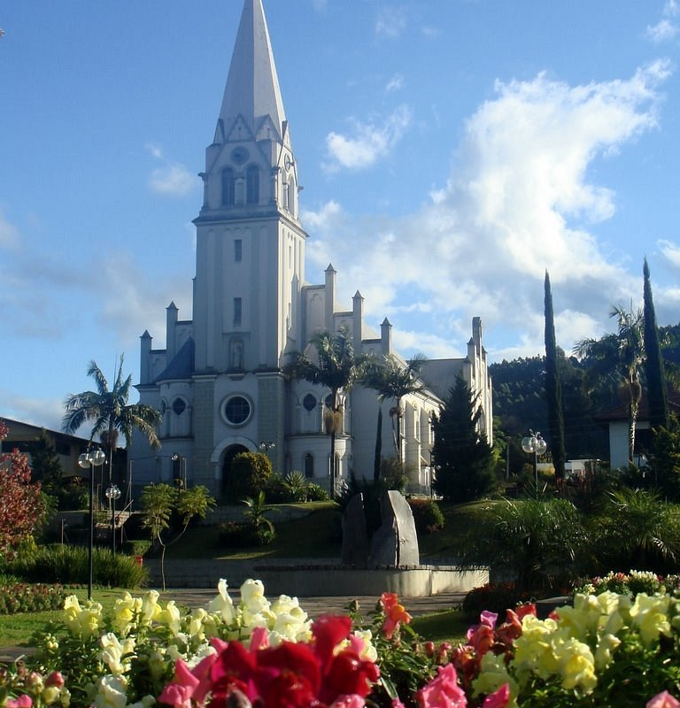

-
Praça do Suspiro

Localizada no coração do centro da cidade, é um dos pontos mais charmosos e históricos de Nova Friburgo. É nela que ficam a Capela de Santo Antônio (reconstruída após as chuvas de 2011), a Fonte dos Suspiros (famosa pelas lendas de amor) e a Praça dos Trovadores. É o ponto de partida perfeito para explorar o turismo urbano da cidade.
-
Teleférico

Partindo exatamente da Praça do Suspiro, o teleférico de Nova Friburgo é um dos maiores do Brasil em extensão de cadeira dupla. O trajeto leva os visitantes até o topo do Morro da Cruz, oferecendo uma vista panorâmica espetacular de toda a cidade e das montanhas ao redor.
-
Pico do Caledônia

Com 2.257 metros de altitude, é uma das maiores montanhas do estado do Rio de Janeiro. Fica situado no Parque Estadual dos Três Picos e atrai muitos praticantes de trekking e montanhismo. Do topo, em dias limpos, a vista é inacreditável, permitindo enxergar até a Baía de Guanabara e parte da cidade do Rio.
-
Lumiar

Afastado do centro urbano (a cerca de 30 km), Lumiar é o 5º distrito de Nova Friburgo e um verdadeiro refúgio de paz. O vilarejo é famoso pela atmosfera hippie-chic, cachoeiras deslumbrantes (como o Poço Feio e a Cascata de São José), esportes de aventura (como rafting no Rio Macaé) e uma noite viva com muita música ao vivo, principalmente forró e MPB.
-
São Pedro da Serra

Vizinho de Lumiar (apenas 5 km de distância), São Pedro da Serra compartilha do mesmo clima de tranquilidade, mas com um toque ainda mais aconchegante e romântico. O vilarejo se destaca pela sua rua principal charmosa, repleta de lojinhas de artesanato, ateliês de artistas locais, cafeterias e restaurantes gastronômicos excelentes. É o destino ideal para casais e para quem busca desacelerar.